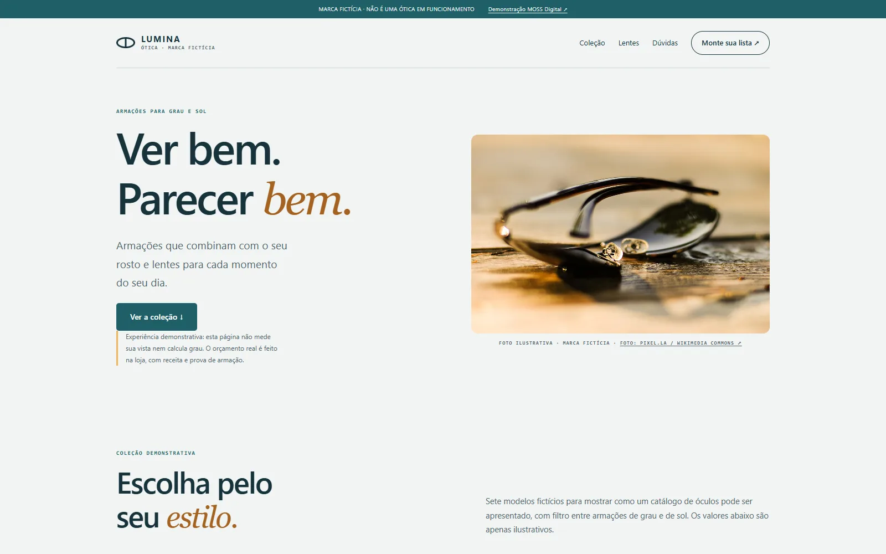

LUMINA ÓTICA / SITE PARA ÓTICA
Ver bem.
Parecer bem.
● ● ●UM MODELO CRIADO PELA MOSS DIGITAL↗

Armações de grau e solGuia de estiloLista de prova local
Marca fictícia. Sem loja, venda, exame de vista ou envio de dados. Recursos reais são definidos por orçamento.